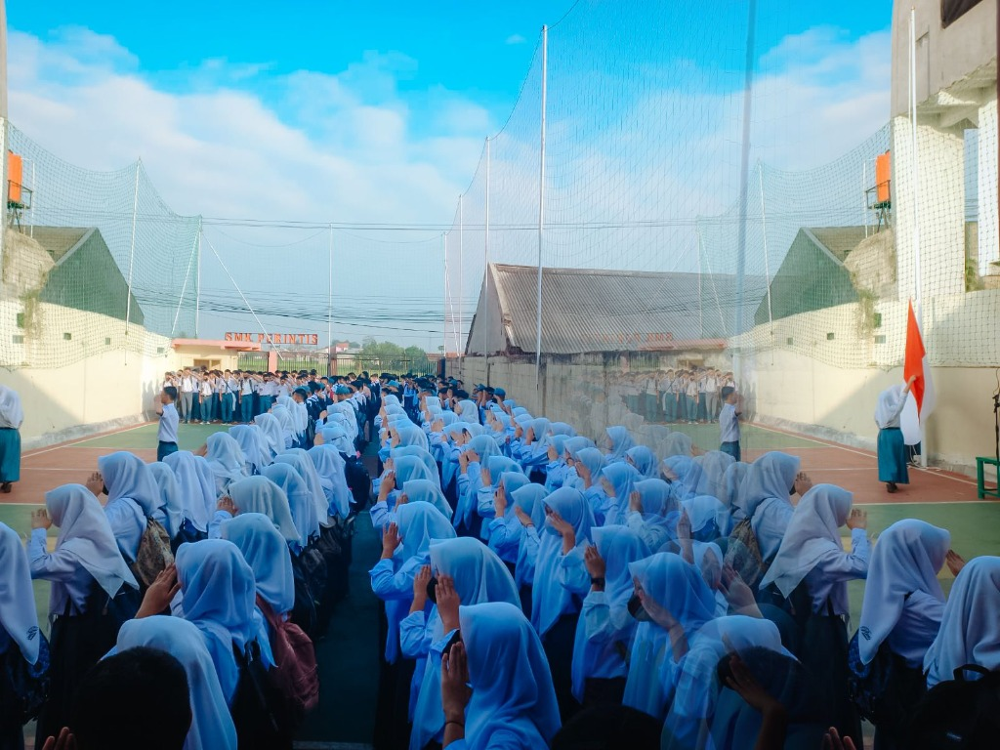
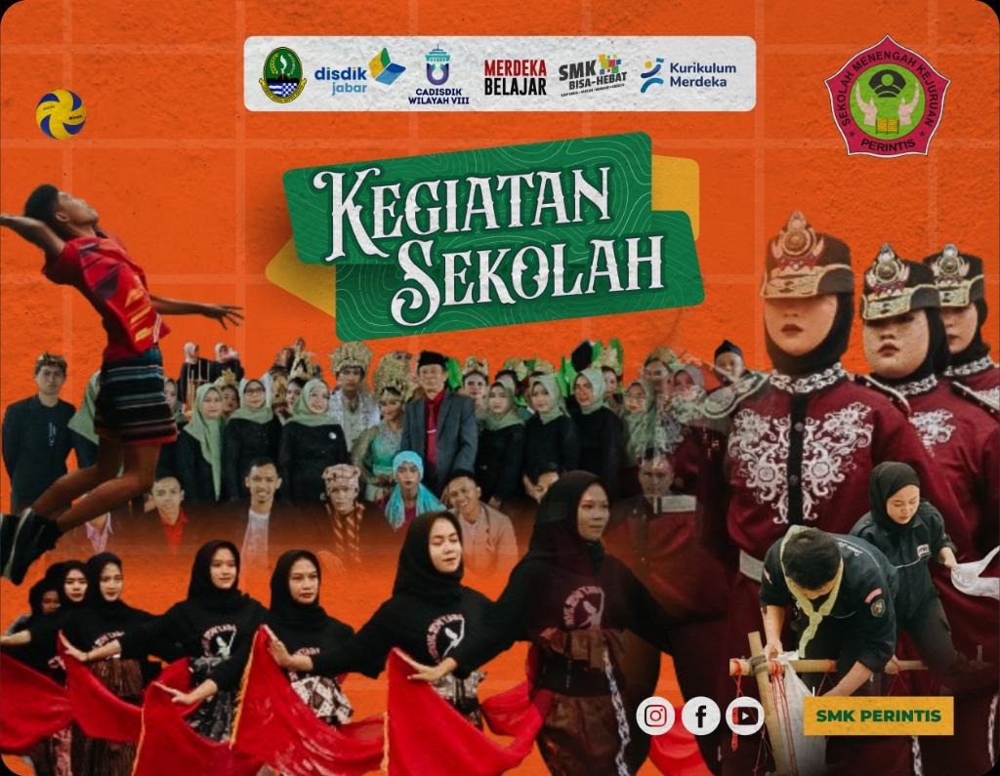
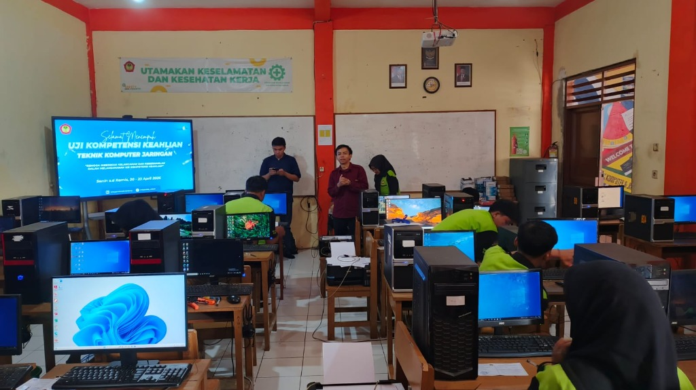
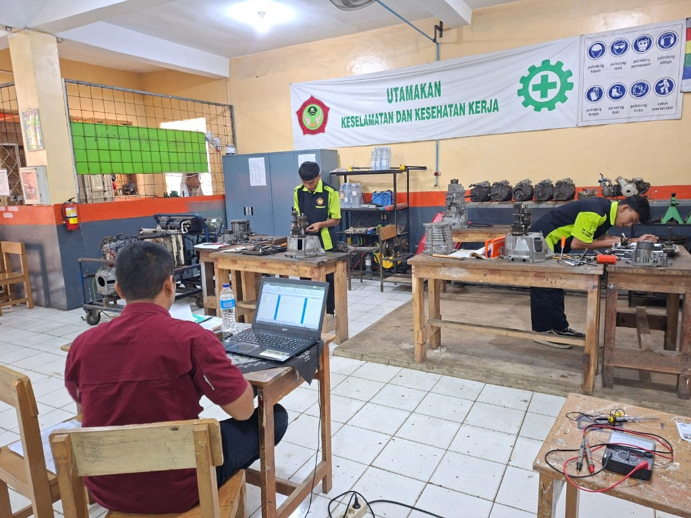
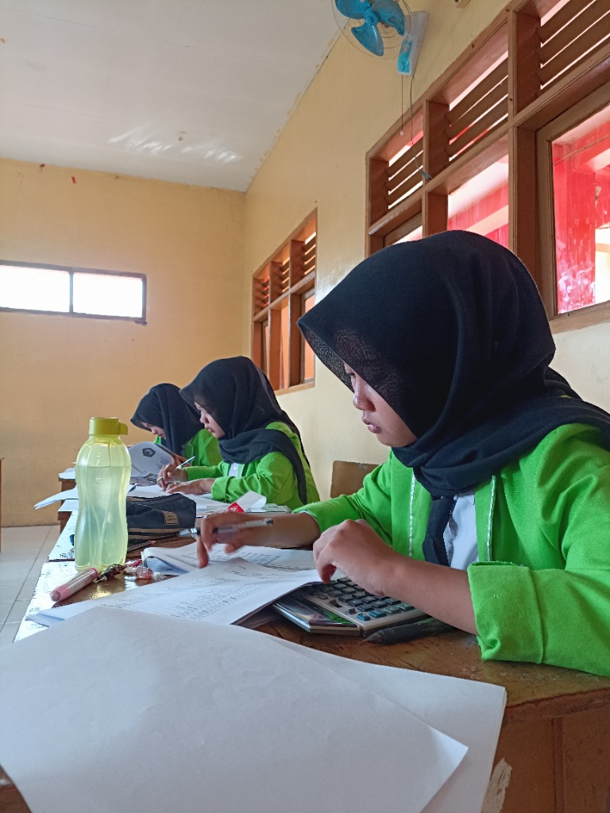
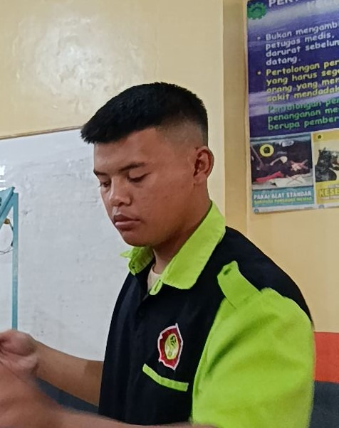

Selamat datang di SMK Perintis Kabupaten Bandung. Kami berkomitmen untuk menyelenggarakan pendidikan vokasi yang relevan dengan kebutuhan industri modern. Dengan kurikulum yang dinamis dan berorientasi pada pengembangan keahlian kerja nyata, kami mendidik siswa agar siap bersaing di pasar kerja global maupun berwirausaha secara mandiri.
Pembelajaran di SMK Perintis ditunjang oleh laboratorium modern serta tenaga pendidik yang kompeten di bidangnya. Kami membina tiga program keahlian unggulan yaitu Teknik Komputer Jaringan (TKJ), Teknik Kendaraan Ringan (TKR), dan Akuntansi untuk mencetak lulusan dengan keunggulan kompetitif.

Membekali siswa dengan kompetensi profesional untuk menghadapi tantangan industri masa kini

Mempelajari instalasi jaringan lokal & internet, administrasi server, keamanan siber, perakitan komputer, hingga pemrograman dasar dan cloud computing.

Fokus pada penguasaan mesin otomotif, chasis, sistem kelistrikan kendaraan, diagnosis kerusakan kendaraan ringan, serta teknologi EFI dan kendaraan listrik.

Membekali siswa kemampuan akuntansi keuangan, administrasi perpajakan, pengelolaan spreadsheet, komputer akuntansi (MYOB/Accurate), serta audit internal.
SMK Perintis bekerjasama dengan berbagai perusahaan dan instansi industri untuk penyaluran kerja dan magang siswa
Tanggapan langsung dari para alumni berprestasi dan mitra industri kerja sama sekolah
"Pembekalan praktik bengkel TKR sangat disiplin dan presisi sesuai standar industri otomotif Jepang. Berkat kerja sama sekolah, setelah lulus saya langsung disalurkan kerja di bengkel resmi."
"Bersekolah di jurusan TKJ SMK Perintis membuka jalan saya menjadi Network Engineer. Guru-guru di sini sangat suportif dan perangkat laboratorium jaringannya sangat lengkap seperti di dunia kerja."

"Materi perpajakan dan MYOB komputer akuntansi sangat aplikatif. sangat mendidik kami merasakan mengelola keuangan selayaknya bekerja di industri perbankan."
Silakan hubungi bagian sekretariat sekolah atau kunjungi langsung kampus kami pada jam pelayanan kerja (Senin - Jumat 07.30 - 15.00 WIB).
Jalan Terusan Katapang Andir KM3 No.23, Sukaluyu, Bojongkunci, Kec. Pameungpeuk, Kabupaten Bandung, Jawa Barat 40921